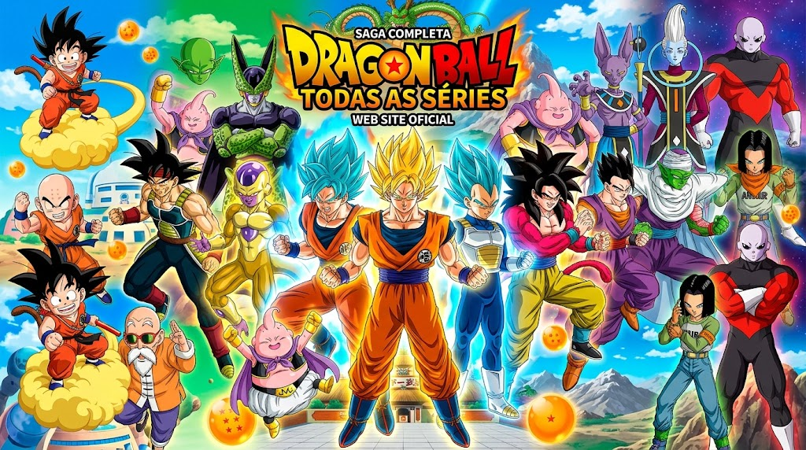
Bem-vindo à enciclopédia de Dragon Ball
Esta página reúne informações sobre a franquia Dragon Ball, incluindo personagens, sagas, transformações, técnicas, filmes, universos e jogos.
1. Sobre a franquia
Dragon Ball é uma franquia criada por Akira Toriyama. O mangá começou a ser publicado em 1984 e acompanha Son Goku desde sua infância.
A história mistura artes marciais, aventura, comédia, ficção científica e fantasia.
Mangá
A obra original criada por Akira Toriyama.
Anime
Dragon Ball, Z, GT, Kai, Super e DAIMA.
Jogos
A franquia possui jogos de luta, RPG, aventura e outros gêneros.
2. Séries
| Obra | Período | Características |
|---|---|---|
| Dragon Ball | 1986–1989 | Infância de Goku e primeiras aventuras. |
| Dragon Ball Z | 1989–1996 | Saiyajins, Freeza, Cell e Majin Boo. |
| Dragon Ball GT | 1996–1997 | Nova aventura com Goku criança. |
| Dragon Ball Kai | 2009–2015 | Versão revisada de Dragon Ball Z. |
| Dragon Ball Super | 2015–2018 | Deuses, novos universos e Torneio do Poder. |
| Dragon Ball DAIMA | 2024–2025 | Aventura no Reino Demoníaco. |
3. Principais Sagas
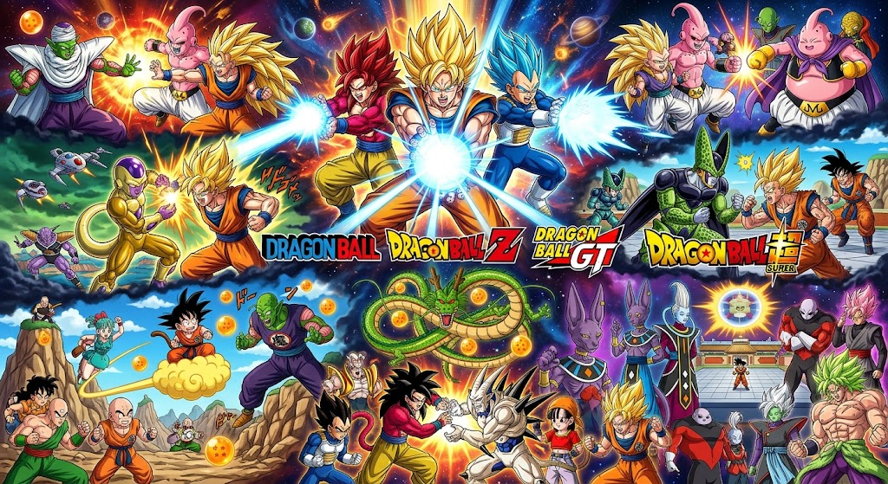
Dragon Ball
Pilaf, 21º Torneio, Red Ribbon, Piccolo Daimaoh e 23º Torneio.
Sagas de Z
Saiyajins, Namekusei, Freeza, Androides, Cell e Majin Boo.
Dragon Ball Super
Beerus, Freeza Dourado, Universo 6, Goku Black e Torneio do Poder.
Dragon Ball GT
Baby, Super 17 e Dragões Malignos.
DAIMA
Goku e seus aliados enfrentam acontecimentos no Reino Demoníaco.
4. Personagens
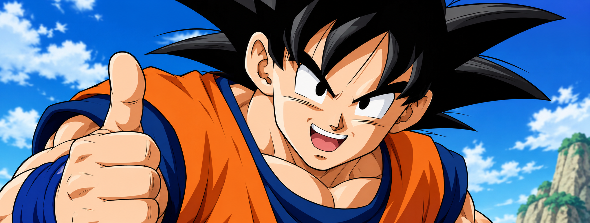
Son Goku
Saiyajin criado na Terra e protagonista principal da franquia.
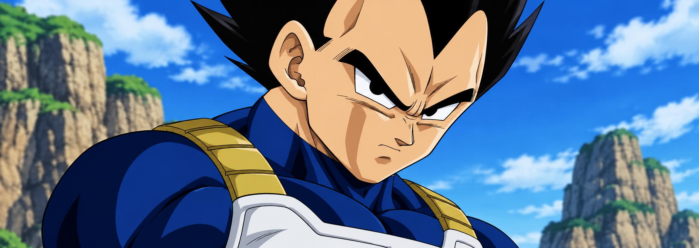
Vegeta
Príncipe dos Saiyajins e principal rival de Goku.
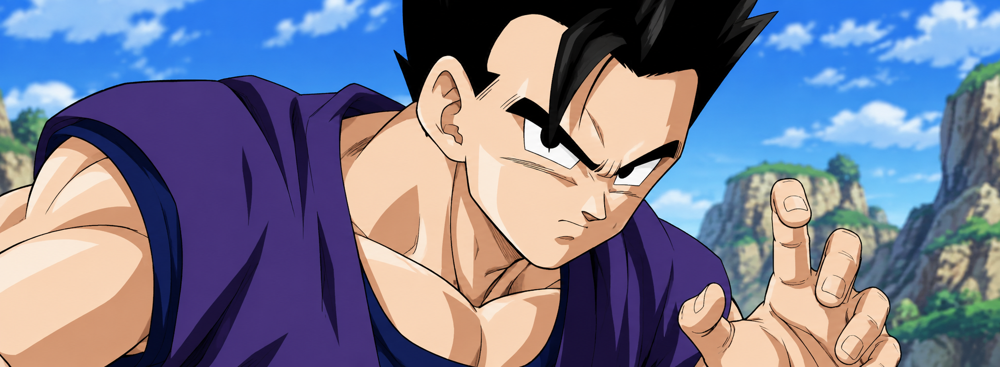
Gohan
Filho de Goku com enorme potencial de luta.
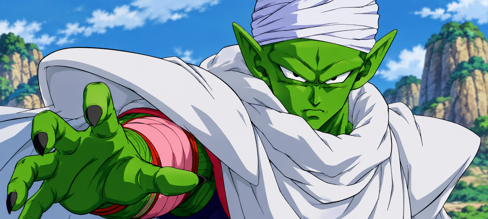
Piccolo
Namekuseijin e antigo inimigo de Goku.
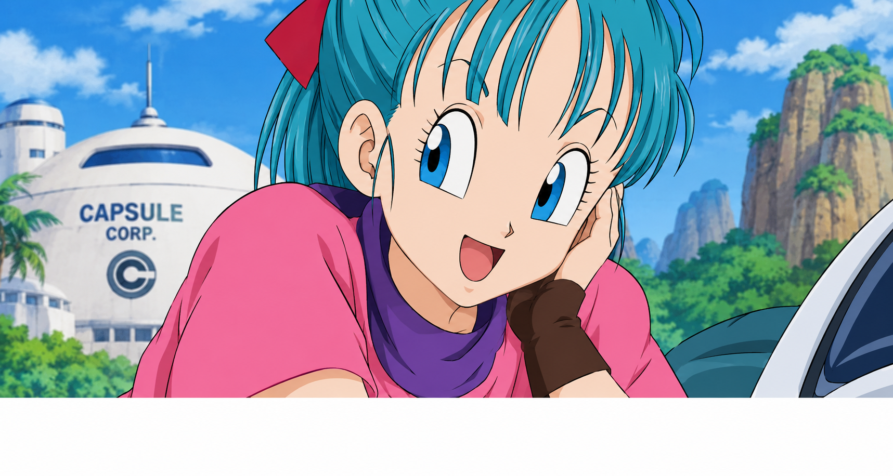
Bulma
Grande inventora e uma das personagens mais importantes da história.
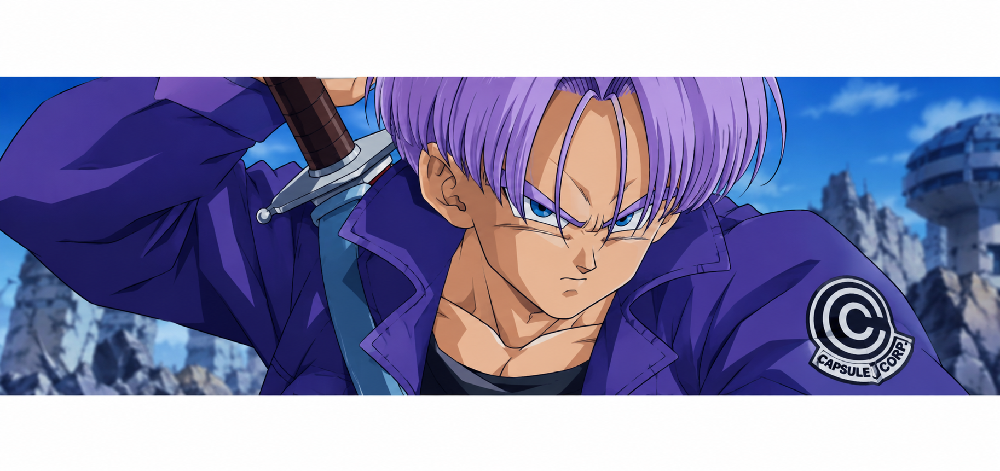
Trunks
Filho de Vegeta e Bulma.
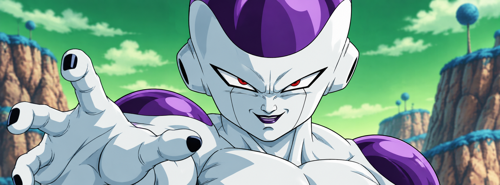
Freeza
Um dos principais inimigos de Goku.
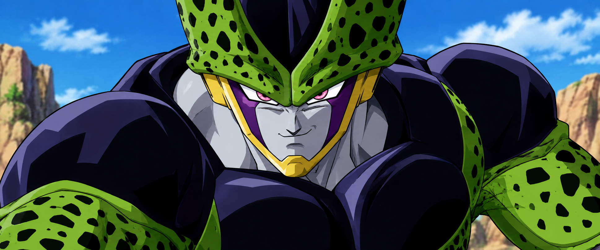
Cell
Bioandroide criado para alcançar sua forma perfeita.
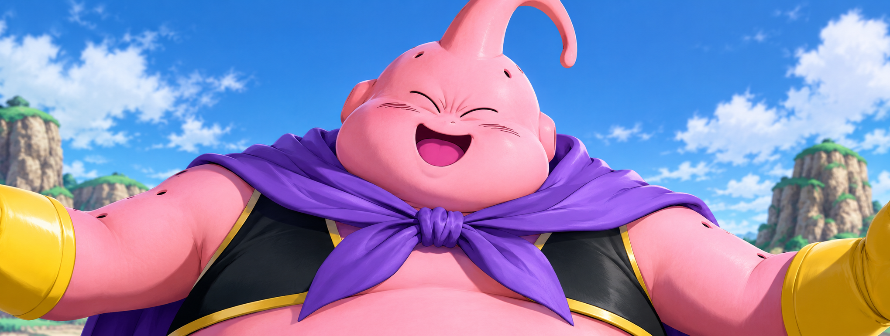
Majin Boo
Poderosa entidade mágica com diferentes formas.
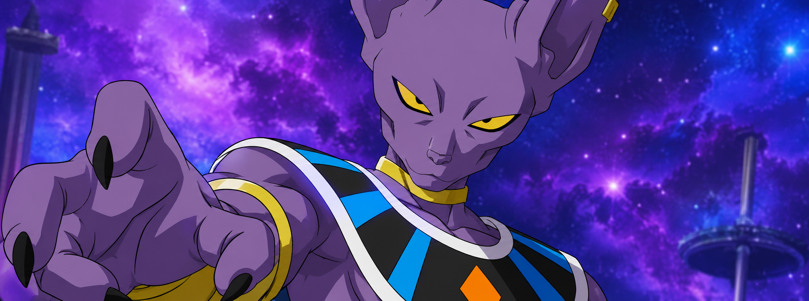
Beerus
Deus da Destruição do Universo 7.
5. Transformações
| Transformação | Personagens | Descrição |
|---|---|---|
| Oozaru | Saiyajins | Grande macaco dos Saiyajins. |
| Super Saiyajin | Goku, Vegeta, Gohan | Uma das principais transformações Saiyajins. |
| Super Saiyajin 2 | Goku, Vegeta, Gohan | Evolução do Super Saiyajin. |
| Super Saiyajin 3 | Goku, Gotenks | Forma com grande consumo de energia. |
| Super Saiyajin God | Goku, Vegeta | Transformação de natureza divina. |
| Super Saiyajin Blue | Goku, Vegeta | Super Saiyajin utilizando poder divino. |
| Instinto Superior | Goku | Estado baseado em reação automática. |
| Ultra Ego | Vegeta | Estado relacionado ao poder da destruição. |
| Beast | Gohan | Nova transformação de Gohan. |
6. Filmes
Battle of Gods
Introdução de Beerus e do Super Saiyajin God.
Resurrection 'F'
Retorno de Freeza e sua nova transformação.
Dragon Ball Super: Broly
Apresenta a versão moderna de Broly.
Dragon Ball Super: Super Hero
Gohan e Piccolo enfrentam uma nova ameaça.
7. Universo
Universo 7
Universo onde vivem Goku, Vegeta e os principais personagens da história.
Deuses da Destruição
Entidades responsáveis pela destruição dentro dos universos.
Anjos
Seres extremamente poderosos associados aos Deuses da Destruição.
Zen'oh
Rei de Tudo e autoridade máxima apresentada em Dragon Ball Super.
8. Raças
Saiyajins
Saiyajins: raça guerreira originária do planeta Vegeta, famosa por sua capacidade de combate e transformações.
Humanos
Humanos: incluem mestres marciais como Kuririn, Tenshinhan, Yamcha e Mestre Kame.
Namekuseijins
Namekuseijins: povo do planeta Namek, ligado às Esferas do Dragão e às técnicas de fusão.
Androides
Androides: seres artificiais ou modificados.
Frost Demons
Frost Demons: uma das raças alienigenas mais poderosas e temidas do universo Dragon Ball, conhecidos por sua força imensa, habilidades de transformação e personalidades astutas.Incluen Freeza e Rei Cold.
Kaioshins
Kaioshins: são deuses responsáveis pela criação e manutenção dos universos em Dragon Ball, possuindo grande poder e sabedoria espiritual.
Anjos
Anjos: são seres extremamente poderosos que servem como guias e tutores dos Deuses da Destruição, mantendo equilíbrio e ensinando técnicas de combate.
Deuses da Destruição
Deuses da Destruição: são entidades poderosas responsáveis por destruir planetas e civilizações para manter o equilíbrio do universo, funcionando como o lado do caos na criação cósmica. Em contraste, os Kaiohshins são os Deuses da Criação, que geram vida e guardam o crescimento dos planetas, coexistindo com os Deuses da Destruição como forças opostas e interligadas para sustentar o ciclo natural
9. Técnicas
Kamehameha
Uma das técnicas mais famosas de Goku.
Final Flash
Uma das principais técnicas de Vegeta.
Genki Dama
Técnica que reúne energia de seres vivos.
Makankosappo
Técnica característica de Piccolo.
Fusão
Técnica que combina dois guerreiros.
10. Jogos
Budokai
Série clássica de jogos de luta.
Budokai Tenkaichi
Jogos de luta em arenas tridimensionais.
Xenoverse
Jogos envolvendo viagens no tempo.
FighterZ
Jogo de luta desenvolvido pela Arc System Works.
Kakarot
RPG de ação baseado na história de Goku.
11. Cronologia
1984 — início do mangá.
1986 — estreia do anime Dragon Ball.
1989 — estreia de Dragon Ball Z.
1996 — estreia de Dragon Ball GT.
2009 — estreia de Dragon Ball Kai.
2013 — Battle of Gods.
2015 — Dragon Ball Super.
2018 — Dragon Ball Super: Broly.
2022 — Dragon Ball Super: Super Hero.
2024 — Dragon Ball DAIMA.